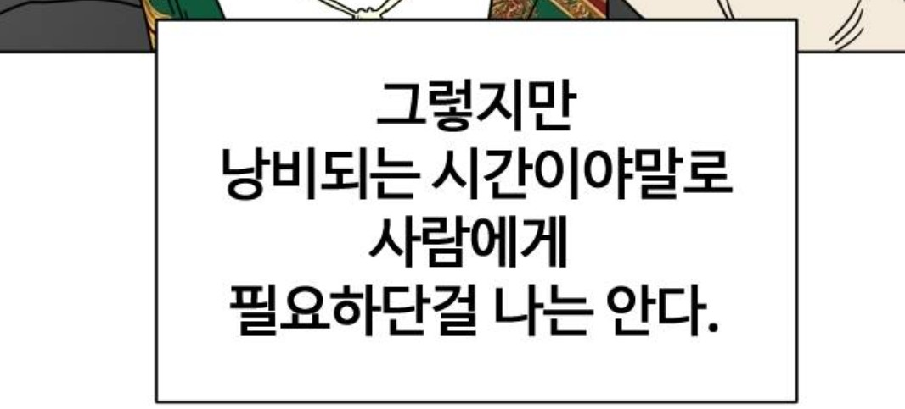

About
정해진 사무실 없이 세계 곳곳을 옮겨 다니며 일하고, 투자합니다. 한 곳에 머무르지 않는 삶의 방식 속에서 시장을 바라보는 다양한 시각을 얻고, 그 시각을 바탕으로 투자 의사결정을 내리는 것을 즐깁니다.

그렇지만 낭비되는 시간이야말로 사람에게 필요하단걸 나는 압니다. 숫자와 데이터를 좋아하지만, 결국 좋은 투자는 멈춰서 흘려보내는 시간 속에서 태어난다고 믿습니다. 느리더라도 꾸준하게, 그리고 어디서든 일할 수 있는 자유를 지키는 것이 목표입니다.
Live Data
마지막 업데이트
불러오는 중...
GitHub Actions가 매일 자동으로 실행되어 이 시각을 갱신합니다. (지금은 크롤링 로직이 없어 Action이 실행된 시각만 임시로 기록하며, 추후 실제 크롤링 데이터로 대체될 예정입니다)